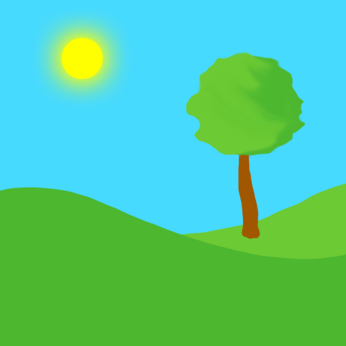
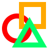
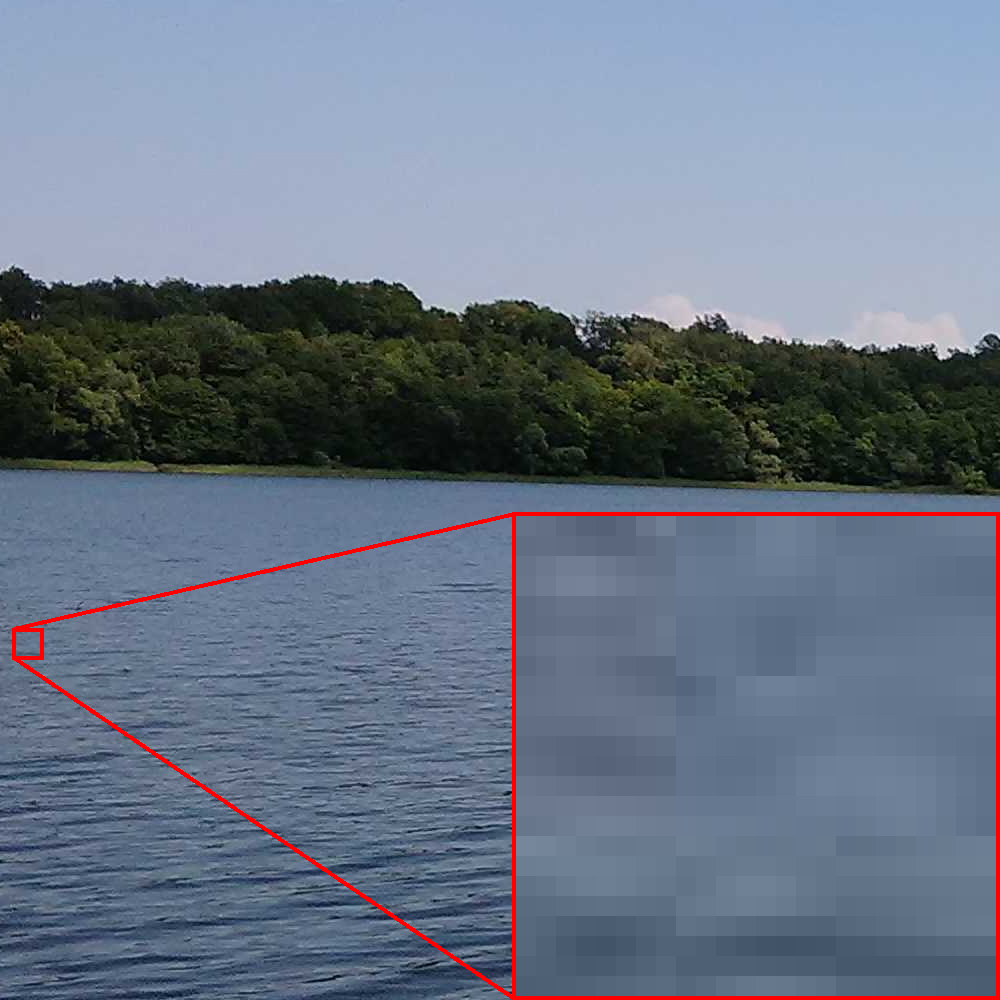
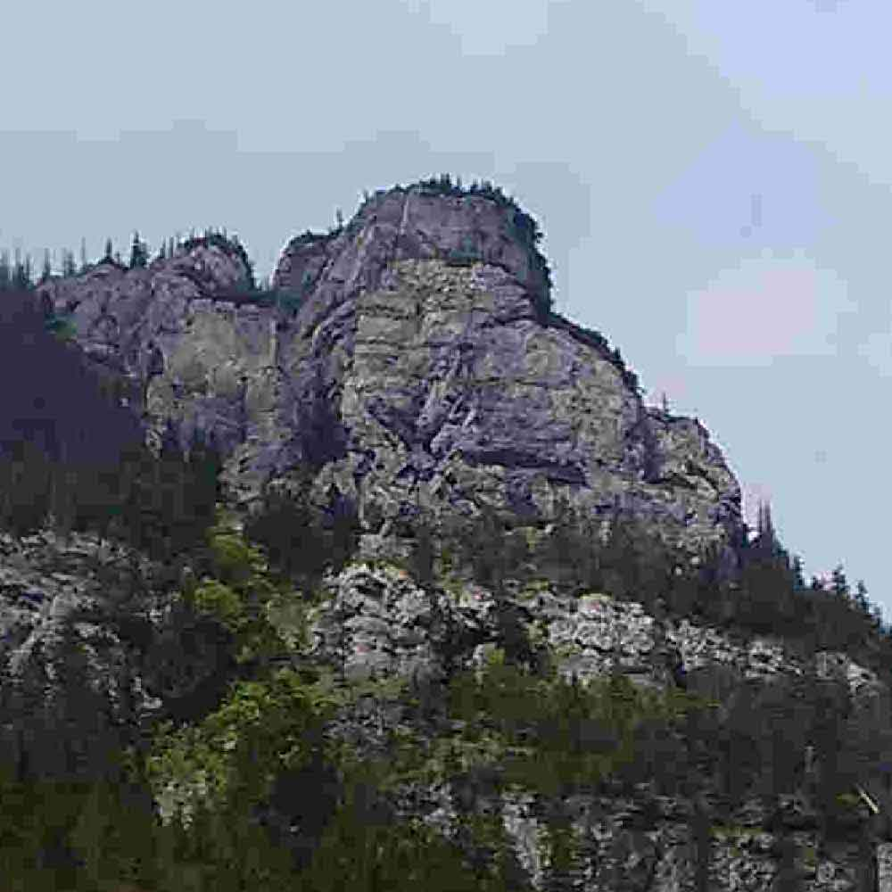

Pikselizacja to efekt, który pojawia się, gdy powiększamy obraz rastrowy do momentu, w którym pojedyncze piksele stają się widoczne.
W grafice rastrowej mogą też występować artefakty – np. szumy, bloki kompresji, zniekształcenia kolorów lub nieostrości.
Artefakty najczęściej pojawiają się przy nadmiernym kompresowaniu lub powiększaniu obrazów poza ich naturalną rozdzielczość.
Grafika Rastrowa
Czym jest grafika rastrowa?
Grafika rastrowa to rodzaj grafiki komputerowej, który składa się z pikseli – pojedynczych, kwadratowych punktów o określonych kolorach tworzących obraz. Ten rodzaj grafiki jest najczęściej stosowany w fotografii cyfrowej, skanach i obrazach do wyświetlania na ekranach.
Przykłady grafiki rastrowej
Poniżej znajdują się przykładowe obrazy w formacie rastrowym. Zwróć uwagę na to, że powiększając je, mogą być widoczne pojedyncze piksele:


Zalety grafiki rastrowej
- Idealna do zdjęć i realistycznych obrazów.
- Szeroko stosowana w Internecie i fotografii cyfrowej.
- Łatwość edycji pojedynczych pikseli w programach takich jak Photoshop czy GIMP.
Wady grafiki rastrowej
- Przy powiększaniu obraz może się rozmywać.
- Pliki dużej rozdzielczości mogą zajmować dużo miejsca.
- Nie nadaje się do skalowania w nieskończoność – w przeciwieństwie do grafiki wektorowej.
Pikselizacja i artefakty obrazu

Pikselizacja przy powiększeniu obrazu

Mocno skompresowana fotografia z widocznymi artefaktami
Popularne formaty rastrowe
Do najczęściej używanych formatów grafiki rastrowej należą: JPEG, PNG, GIF, BMP, TIFF, WebP. Wybór formatu zależy od zastosowania, potrzeby kompresji i obsługi przez programy graficzne.
| Format | Kompresja | Przezroczystość | Warstwy | Animacja | Zastosowanie |
|---|---|---|---|---|---|
| JPEG/JPG | Stratna | ❌ | ❌ | ❌ | Fotografie, internet |
| PNG | Bezstratna | ✅ | ❌ | ❌ | Ikony, logotypy, ilustracje |
| GIF | Bezstratna | ✅ | ❌ | ✅ | Proste animacje, ikonki |
| BMP | Brak / RLE | ❌ | ❌ | ❌ | Edycja grafiki, MS Paint |
| TIFF | Stratna/Bezstratna | ✅ | ✅ | ❌ | Druk, archiwizacja |
| WebP | Stratna/Bezstratna | ✅ | ❌ | ✅ | Optymalizacja stron WWW |
| FLIF | Bezstratna | ✅ | ❌ | ❌ | Eksperymentalna kompresja |
| PSD | Bezstratna | ✅ | ✅ | ❌ | Adobe Photoshop |
| XCF | Bezstratna | ✅ | ✅ | ❌ | GIMP |